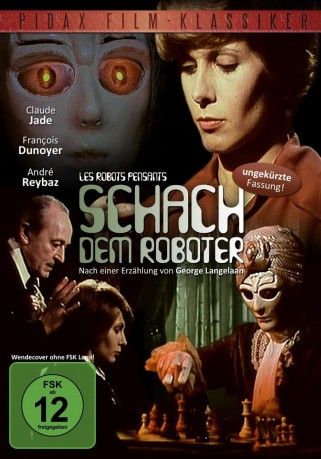

IMDB-Wertung: 7.1 / 10
IMDB-Wertung: 7.1 / 10  Metascore:
Metascore: 
Die junge Pianistin Penny besucht ein Schachturnier. Die Züge des Roboters schockieren Penny - es sind jene ihres totgeglaubten Verlobten Robert.
 IMDB-Wertung: 7.1 / 10 Metascore:
Die junge Pianistin Penny besucht ein Schachturnier. Die Züge des Roboters schockieren Penny - es sind jene ihres totgeglaubten Verlobten Robert.
Jahr: 1976
Dauer: 93 Minuten
FSK: 12
Land: Frankreich Studio: Pidax FilmTonspuren:
Untertitel:
Auflösung: SD (576x432) Größe: 896 MB
Regisseur: Michel Subiela
Drehbuch: Beta Film
Soundtrack:
Darsteller:
 Gisèle Casadesus als Madame Vanderwood
Gisèle Casadesus als Madame VanderwoodDatei: X:\1976\Schach dem Roboter (1976, FSK12, 576x432).avi seit 13.02.2017
Festplatte: HD 1971-1979
 Es gibt insgesamt 31 Filme in der Gruppe '1976'
Es gibt insgesamt 31 Filme in der Gruppe '1976'